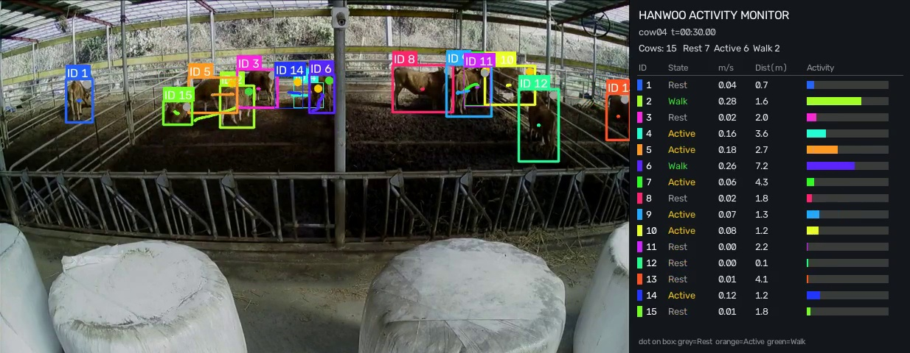

Lesson 10 / 14
Result Video and Dashboard
Numbers alone are hard to use on the farm. We produce two outputs: ① a result video with animal IDs, tracks and a live panel drawn on it, and ② an HTML dashboard that shows per-animal metrics at a glance.
1. Result video

- A unique color per ID: the hue wheel is rotated by the golden ratio (0.618…) so neighboring IDs get clearly distinguishable colors
- Only interpolated segments (momentary gaps of 0.5 s or less) are drawn as thin boxes, and tracks are drawn only through real detection positions → no paths appear where there is no animal
- Dot at the top right of the box: gray = Rest, orange = Active (local activity), green = Walk
- Frames are piped directly to FFmpeg and encoded as H.264 / yuv420p / faststart → plays directly in the browser and starts streaming quickly
📄 hanwoo/render.py (L1–40)
"""Stage 4: render the result video (ID boxes + trails + live mini-dashboard panel).
Encoded to H.264 (yuv420p, faststart) through an ffmpeg pipe for browser playback.
"""
from __future__ import annotations
import colorsys
import subprocess
from collections import defaultdict, deque
import cv2
import numpy as np
import pandas as pd
from .config import STATE_NAMES, PipelineConfig
STATE_COLORS = {0: (160, 160, 160), 1: (0, 200, 255), 2: (60, 220, 60)} # BGR
def id_color(tid: int):
h = (tid * 0.61803398875) % 1.0
r, g, b = colorsys.hsv_to_rgb(h, 0.85, 1.0)
return int(b * 255), int(g * 255), int(r * 255)
def _label(img, text, org, color, scale=0.5, thick=1, bg=(0, 0, 0)):
(tw, th), bl = cv2.getTextSize(text, cv2.FONT_HERSHEY_SIMPLEX, scale, thick)
x, y = org
cv2.rectangle(img, (x, y - th - 4), (x + tw + 4, y + bl - 1), bg, -1)
cv2.putText(img, text, (x + 2, y - 2), cv2.FONT_HERSHEY_SIMPLEX, scale, color, thick, cv2.LINE_AA)
def render_video(video_path, act: pd.DataFrame, meta: dict, out_path, cfg: PipelineConfig, title=""):
fps, W, H = meta["fps"], meta["width"], meta["height"]
PW = cfg.panel_width
OW, OH = W + PW, max(H, 480)
cmd = ["ffmpeg", "-v", "error", "-y", "-f", "rawvideo", "-pix_fmt", "bgr24", "-s", f"{OW}x{OH}",
"-r", str(fps), "-i", "-", "-c:v", "libx264", "-preset", "veryfast", "-crf", "23",
"-pix_fmt", "yuv420p", "-movflags", "+faststart", str(out_path)]
proc = subprocess.Popen(cmd, stdin=subprocess.PIPE)2. Dashboard
For each video outputs/<video>/dashboard.html is generated, plus an overall summary outputs/index.html. Each is a single HTML file that opens with a double-click, no server required, and the charts use Plotly.js.
| Component | What it shows |
|---|---|
| KPI cards | Number of identified animals, video length, total herd distance, mean activity index, most active animal |
| Result video | Playback of the video with IDs assigned |
| Distance / state ratios per animal | Who moved the most, who mostly rested |
| Activity index over time | Per-animal trend of the 5-second mean activity index |
| Movement tracks | Per-animal tracks over the pen background — reveals preferred locations (feed bunk, water trough) |
| Summary table | Contents of summary.csv |
📄 hanwoo/dashboard.py (L1–20)
"""Stage 5: activity dashboards (HTML) with Plotly.js - one per video plus one overall summary."""
from __future__ import annotations
import json
from pathlib import Path
import pandas as pd
from .render import id_color
PLOTLY = "https://cdn.jsdelivr.net/npm/plotly.js-dist-min@2.35.2/plotly.min.js"
CSS = """
:root{--bg:#f6f5f1;--card:#fff;--ink:#1f2328;--mut:#5c6370;--line:#e3e0d8;--acc:#b5562b}
@media (prefers-color-scheme: dark){:root{--bg:#16171a;--card:#1f2125;--ink:#e8e6e1;--mut:#9aa0a8;--line:#30333a;--acc:#e08a5a}}
*{box-sizing:border-box}body{margin:0;background:var(--bg);color:var(--ink);font-family:system-ui,-apple-system,"Segoe UI",Roboto,sans-serif}
header{padding:20px 24px;border-bottom:1px solid var(--line)}h1{margin:0;font-size:22px}header p{margin:4px 0 0;color:var(--mut);font-size:14px}
main{max-width:1280px;margin:0 auto;padding:20px 16px}
.kpis{display:grid;grid-template-columns:repeat(auto-fit,minmax(170px,1fr));gap:12px;margin-bottom:16px}
.kpi{background:var(--card);border:1px solid var(--line);border-radius:10px;padding:14px}.kpi b{display:block;font-size:26px;margin-top:4px}.kpi span{color:var(--mut);font-size:13px}3. Connecting the pipeline
📄 hanwoo/pipeline.py
"""Full pipeline: one video → outputs/<name>/ (video, CSV, JSON, dashboard)."""
from __future__ import annotations
import json
import time
from pathlib import Path
import cv2
import numpy as np
import pandas as pd
from .activity import compute_activity, summarize, timeseries
from .config import OUTPUT_DIR, PipelineConfig
from .dashboard import write_video_dashboard
from .detect_track import run_detect_track
from .identity import assign_identities, attach_embeddings, estimate_herd_size, split_swaps
from .render import render_video
from .stitching import clean_short, fit_perspective, relabel_and_interpolate, stitch_tracklets
from .zones import ZoneFilter, load_zones, size_ok, zones_path_for
def process_video(video_path, cfg: PipelineConfig | None = None, out_root: Path = OUTPUT_DIR,
reuse: bool = False) -> dict:
cfg = cfg or PipelineConfig()
video_path = Path(video_path)
name = video_path.stem
out_dir = Path(out_root) / name
out_dir.mkdir(parents=True, exist_ok=True)
t0 = time.time()
print(f"=== {name} ===")
cache = out_dir / "cache_track.npz"
if reuse and cache.exists():
# reuse detection/tracking results → for quickly retuning linking/activity parameters
z = np.load(cache, allow_pickle=True)
raw = pd.read_csv(out_dir / "tracks_raw.csv")
feats = {(int(f), int(t)): v for (f, t), v in zip(z["keys"], z["vals"].astype(np.float32))}
meta = z["meta"].item()
t_track = float(z["t_track"])
print(" reuse cached detection/tracking")
else:
raw, feats, meta = run_detect_track(video_path, cfg)
t_track = time.time() - t0
raw.to_csv(out_dir / "tracks_raw.csv", index=False)
keys = np.array(list(feats.keys()), dtype=np.int32).reshape(-1, 2)
vals = np.array(list(feats.values()), dtype=np.float16).reshape(len(keys), -1)
np.savez_compressed(cache, keys=keys, vals=vals, meta=np.array(meta, dtype=object), t_track=t_track)
fps = meta["fps"]
raw_ids = raw.tid.nunique()
raw = raw.assign(rtid=raw.tid) # original tracker id (links ReID embeddings)
# detection zones (ROI): drop false-positive boxes outside the barn / on blurry background (configs/zones/<video>.json)
zpath = Path(cfg.zones_file) if cfg.zones_file else zones_path_for(video_path)
zf = ZoneFilter(load_zones(zpath), meta["width"], meta["height"])
n_zone = 0
if zf.active:
keep = zf.keep_df(raw)
n_zone = int((~keep).sum())
raw = raw[keep].reset_index(drop=True)
print(f" zones {zpath.name}: removed {n_zone} boxes ({n_zone / max(len(keep), 1):.1%})")
if cfg.min_size_ratio > 0:
p0 = fit_perspective(raw)
keep = np.array([size_ok(b, p0, cfg.min_size_ratio) for b in raw[["x1", "y1", "x2", "y2"]].to_numpy()], bool)
n_zone += int((~keep).sum())
raw = raw[keep].reset_index(drop=True)
clean = clean_short(raw, cfg)
persp = fit_perspective(clean)
use_id = cfg.use_identity and Path(cfg.reid_weights).exists()
id_stats, splits = None, []
if use_id:
# (A) fixed herd: link short gaps only → ReID swap splitting → assign to N slots
stitched, feats, links = stitch_tracklets(clean, feats, fps, cfg, persp, stages=("short",))
emb_df, emb = load_or_extract_embeddings(video_path, raw, out_dir, cfg, reuse)
embs = attach_embeddings(stitched, emb_df, emb)
stitched, embs, splits = split_swaps(stitched, embs, fps, cfg)
n_herd = cfg.herd_size or estimate_herd_size(raw, meta["n_frames"])
stitched, id_stats, _ = assign_identities(stitched, embs, fps, persp, n_herd, cfg)
print(f" identity: herd N={n_herd}, swaps split {len(splits)}, {id_stats}")
else:
# (B) legacy: two-stage tracklet linking
stitched, feats, links = stitch_tracklets(clean, feats, fps, cfg, persp)
final, mapping = relabel_and_interpolate(stitched.drop(columns=["rtid"]), fps, cfg)
act = compute_activity(final, fps, persp, cfg)
summ = summarize(act, fps)
ts = timeseries(act)
print(f" raw IDs {raw_ids} → after cleaning {clean.tid.nunique()} → final {summ.shape[0]}")
act.round(4).to_csv(out_dir / "tracks_activity.csv", index=False)
summ.to_csv(out_dir / "summary.csv", index=False)
# background image (for dashboard trajectories)
cap = cv2.VideoCapture(str(video_path))
cap.set(cv2.CAP_PROP_POS_FRAMES, min(48, meta["n_frames"] - 1))
ok, bg = cap.read()
cap.release()
if ok:
cv2.imwrite(str(out_dir / f"{name}_bg.jpg"), bg)
t1 = time.time()
if cfg.write_video:
render_video(video_path, act, meta, out_dir / f"{name}_tracked.mp4", cfg, title=name)
t_render = time.time() - t1
info = dict(model=Path(cfg.weights).name if Path(cfg.weights).exists() else cfg.fallback_weights,
cow_height_m=cfg.cow_height_m, perspective=dict(a=persp[0], b=persp[1]),
stitch_links=links, raw_ids=int(raw_ids),
identity=id_stats, swap_splits=splits,
reid=Path(cfg.reid_weights).name if use_id else None)
write_video_dashboard(out_dir, name, summ, ts, act, meta, info)
result = dict(
name=name, duration_s=meta["n_frames"] / fps, n_ids=int(summ.shape[0]), raw_ids=int(raw_ids),
total_distance=float(summ.distance_m.sum()), mean_activity=float(summ.activity_index.mean()),
proc_fps=meta["n_frames"] / max(t_track, 1e-6), track_time_s=round(t_track, 1), n_frames=meta["n_frames"],
render_time_s=round(t_render, 1), perspective=dict(a=persp[0], b=persp[1]), n_links=len(links),
method="reid+herd" if use_id else "stitch2", herd_size=id_stats["herd_size"] if id_stats else None,
unassigned_det_ratio=id_stats["unassigned_det_ratio"] if id_stats else None, n_splits=len(splits),
zone_removed=n_zone, zones=zpath.name if zf.active else None,
)
(out_dir / "result.json").write_text(json.dumps(dict(result=result, info=info), ensure_ascii=False, indent=2),
encoding="utf-8")
print(f" done: track {t_track:.0f}s, render {t_render:.0f}s")
return result
def load_or_extract_embeddings(video_path, raw, out_dir, cfg: PipelineConfig, reuse: bool):
"""ReID embeddings (every reid_every frames) - cached in outputs/<name>/cache_reid.npz."""
from .reid import extract_embeddings, load_reid
cache = out_dir / "cache_reid.npz"
if reuse and cache.exists():
z = np.load(cache, allow_pickle=True)
if str(z["weights"]) == Path(cfg.reid_weights).name and float(z["mtime"]) == Path(cfg.reid_weights).stat().st_mtime:
print(" reuse cached ReID embeddings")
return pd.DataFrame(z["meta"], columns=["frame", "tid", "conf", "occ"]).astype(
dict(frame=int, tid=int)), z["emb"].astype(np.float32)
t0 = time.time()
model = load_reid(cfg.reid_weights)
emb_df, emb = extract_embeddings(video_path, raw, model, every=cfg.reid_every)
np.savez_compressed(cache, meta=emb_df.to_numpy(np.float32), emb=emb.astype(np.float16),
weights=Path(cfg.reid_weights).name, mtime=Path(cfg.reid_weights).stat().st_mtime)
print(f" ReID embeddings {len(emb_df)} crops in {time.time() - t0:.0f}s")
return emb_df, emb